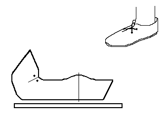

Bocksten Front-Laced Shoes (c1350)
A front-tied shoe, based on a pair recovered with the Bocksten Bog find. They are shown in
Bockstenmannen. It is clearly a turnshoe. It is made from a single piece upper with a single seam along the inner side. Based on some remnant evidence, it is possible that these shoes, even as late as they are, were sewn with woolen threads.
There is clear signs of a binding stitch along the upper edge of the upper, although these have been attributed to the leather strips found along with the shoes. Since I have no evidence to support either contention, I suggest strongly that these shoes were made with a rand between the upper and the sole.
The shoes are tied by simple leather laces, drawn though the holes and tied. It may be made with an attached tongue.
Return to
[Index]
Footwear of the Middle Ages - Historical Shoe Designs/Number 62, by I. Marc Carlson. Copyright 1996
This page is given for the free exchange of information, provided the Author's Name is included in all future revisions, and no money change hands, other than as expressed in the Copyright Page.